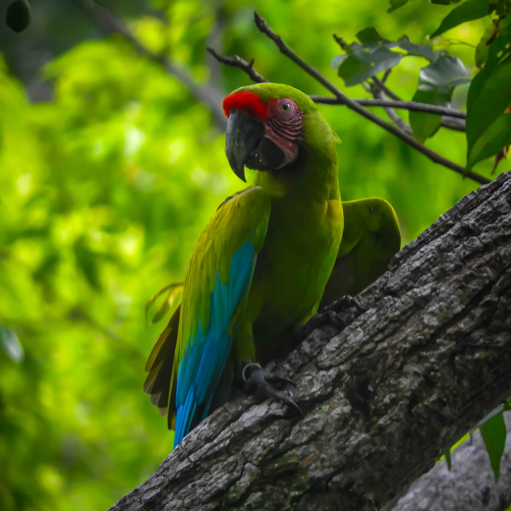

La lapa verde es una de las aves más impresionantes de los bosques del Caribe centroamericano. Grande, ruidosa y de vuelo poderoso, es difícil confundirla cuando una bandada cruza el cielo sobre el dosel del bosque.
También es una de las especies más amenazadas de la región. En todo su rango de distribución sobreviven menos de cuatro mil individuos, y las poblaciones se encuentran cada vez más fragmentadas.

En Costa Rica persisten algunos de los núcleos más importantes de la especie, principalmente en la Zona Norte (Sarapiquí, San Carlos, Maquenque) y en el Caribe Sur, en Talamanca. Aun así, se trata de poblaciones pequeñas que dependen de bosques cada vez más reducidos.
Gran parte de la historia de la lapa verde está ligada a un árbol: el almendro de montaña (Dipteryx panamensis). Las lapas se alimentan de sus semillas y utilizan las cavidades de los árboles grandes para anidar. Durante décadas, la tala de almendros redujo la disponibilidad de estos sitios de reproducción.

En los últimos años han surgido esfuerzos importantes para revertir esta tendencia. Programas de conservación han liberado individuos, protegido nidos y colocado cavidades artificiales que han permitido aumentar el éxito reproductivo de la especie.
Comunidades locales también participan activamente en el monitoreo y la protección de árboles de almendro, mientras que el aviturismo se ha convertido en un incentivo adicional para conservar los bosques donde aún sobreviven estas aves.
La recuperación de la lapa verde es un proceso lento. Los almendros que se plantan hoy tardarán décadas en convertirse en árboles capaces de albergar cavidades adecuadas para anidar. Pero cada vuelo verde sobre el bosque recuerda que estos esfuerzos ya están en marcha.
Este texto es una versión resumida de un trabajo académico sobre el estado de conservación de la lapa verde en Costa Rica.
Referencia
Cordero Miranda, A., Hernández Meneses, C., Morales Guerrero, C., & Solano Morales, C. (2025). Estado de conservación de la lapa verde (Ara ambiguus) en Costa Rica: implicaciones para la participación comunitaria y el aviturismo.